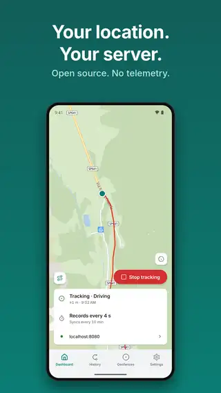
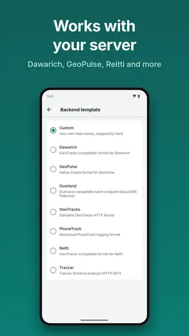

Colota - GPS Location Tracker
خرائط وسفر
Colota is an open-source GPS tracking app that sends your location to your own server over HTTP(S). It works offline, supports geofencing, and doesn't share any data except with your configured backends. Features Self-Hosted - Works with Dawarich, GeoPulse, Home Assistant, OwnTracks, Overland, Phone
✓ ترخيص مفتوح (AGPL-3.0-only) · آخر تحديث: 2026-11-23
1.22.0الإصدار
43.9 MBالحجم
AGPL-3.0-onlyالرخصة
Open in Kanzتحميل APK (43.9 MB)
Download APK
SHA-256: c95bf65c426686671aa9c28df87e9e5d6951d1059ee105893c7a8a5b39f57a0a


امسح الكود لفتح صفحة التطبيق
Scan to open this app page
لو كنز مش متثبت عندك: نزّل متجر كنز.
Not installed? Get the Kanz store.